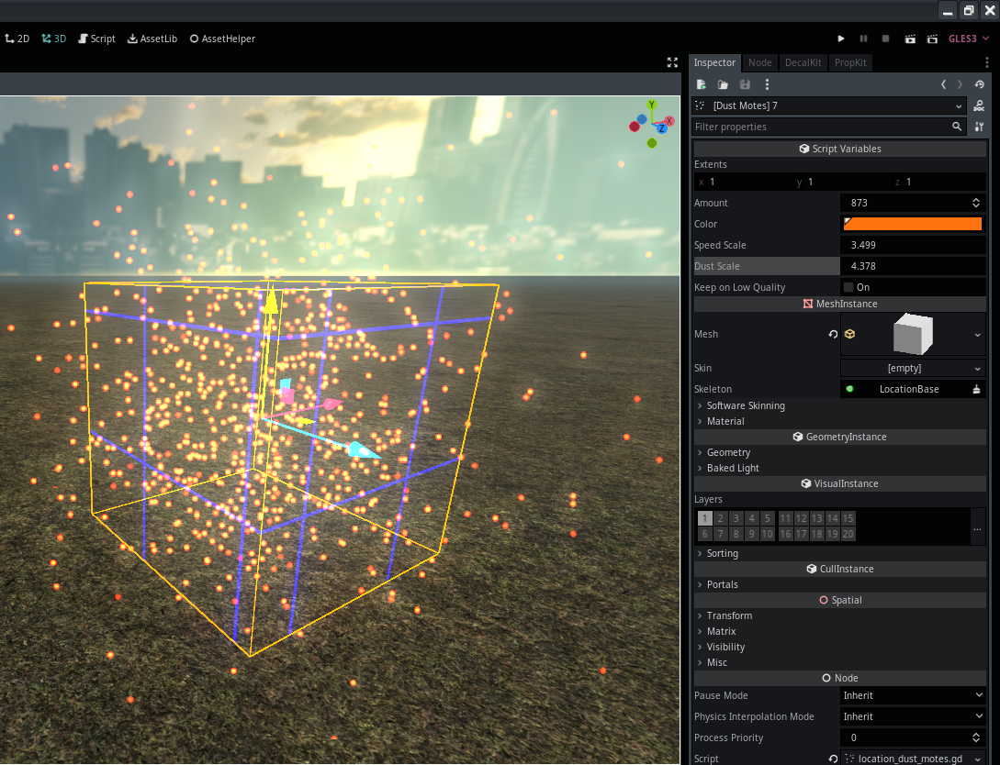

Module: location_dust_motes
Documentation last edited: October 23, 2025 at 14:33 UTC
Description
LocationDustMotes
— это узел, который создаёт пылинки в локациях, предоставляя достаточно простой набор элементов управления для создания пыли. Ты вдыхаешь эту пыль и наслаждаешься ей.

Этот узел pretty настраиваемый, и свойства должны быть понятными. Имей в виду, этот узел создан только для пылинок и ничего больше. Ты можешь изменить объём испускаемых пылинок, изменив свойство
extents
. Я честно сожалею, что сделал это таким образом, но может быть слишком поздно изменить это к лучшему (или нет?), я думаю, было бы лучше масштабировать сам куб и просто менять extents или просто заставить саму частицу регулировать свой масштаб, чтобы соответствовать, или что-то в этом роде.
Я надеюсь, тебе нравится твоя погода.
General Information
Root directories list
assets, docs, src
Nodes
Classes
None
Resources
None
Other Scripts
None